사회조사분석사-1급 (2007-09-02 기출문제)
1과목: 고급조사방법론 I
1. 이메일(e-mail)을 활용한 온라인 조사의 장점이 아닌것은?
- 면접원의 편향 통제
- 신속성
- 조사 모집단 규정의 명확성
- 저렴한 비용
(정답률: 알수없음)

2. 비용과 무응답의 감소를 위해 여러 자료 수집방법을 혼용하는 조사(mixed-mode survery)에서 측정의 일관성 문제가 발생하는데 이에 대한 설명으로 틀린것은?
- 사회적 기대에 부응하려는 경향이 우편조사보다 전화조사에서 더 강하게 나타난다.
- 동의하려는 응답편향(accquiescence)이 자기기입식보다 면접조사에서 더 강하게 나타난다.
- 질문지 배열 순서가 응답에 미치는 효과(question order effects)가 자기기입식 보다 전화조사에서 더 강하게 나타난다.
- 전화조사에서는 처음에 제시된 응답범주를 선택하는 경향(primacy effect)이 나타나는 반면, 우편조사에서는 끝에 제시된 응답범주를 선택하는 경향(recency effect)이 나타난다.
(정답률: 알수없음)
3. 다음은 무엇에 관한 설명인가?
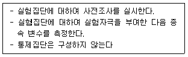
- 단일집단 사후조사(one-shot case study)
- 단일집단 사전사후조사설계(one-group pretest-posttest design)
- 정적 집단비교(static-group comparison)
- 솔로몬 4집단 설계(Solomon four-group design)
(정답률: 알수없음)
4. 어떤 주제나 현상에 대한 예비적인 정보를 수집하는데 주로 사용되며, 핵심주제에 대해 비교적 소수의 응답자가 상대적으로 자유로운 토론을 하는 면접법은?
- 심층면접(intensive interview)
- 표적집단면접(Focus group interview)
- 임상면접(clinical interview)
- 구조적 면접(structured interview)
(정답률: 알수없음)
5. 다음 중 연구설계의 타당성에 관한 설명으로 틀린것은?
- 내적 타당성은 추정된 원인과 결과 사이에 존재하는 인과적 추론의 정확성을 의미한다.
- 외적 타당성은 연구의 결과로 밝혀진 독립변수의 효과에 대한 결론을 일반화시킬 수 있는 범위를 의미한다.
- 내적 타당성의 저해요인은 준실험설계나 비실험설계를 사용할 때 다양하게 나타난다.
- 외적 타당성을 강화하기 위해서는 대표적 사례를 연구하는 것이 가장 강력한 방법이다.
(정답률: 알수없음)
6. 종단연구(longitudinal study)에 대한 설명으로 틀린것은?
- 횡단연구와는 대조적으로 동일한 현상을 긴 기간동안 관찰할 수 있도록 설계된다.
- 종단연구에는 추세연구, 코호트 연구, 패널연구 등이 있다.
- 대규모 조사에 종단연구는 더욱 힘들 수 있다.
- 직접적 관찰과 심층면접을 병행하는 현장조사는 종단연구가 아니다.
(정답률: 알수없음)
7. 자료항목별로 각 응답에 해당하는 숫자나 기호를 부여하는 과정은?
- 편집(editing)
- 코딩(coding)
- 리코딩(recoding)
- 계산(compute)
(정답률: 알수없음)
8. 지식의 획득 방법(approaches to konwledge) 중 “누가 말했는가”를 가장 중시하는것은?
- 권위적 방법(authoritarian mode)
- 신비적 방법(mystical mode)
- 선험적 방법(a priori mode)
- 과학적 방법(scientific mode)
(정답률: 알수없음)
9. 최근에 등장한 조사방법으로 전화조사를 대체할 수 있다고 판단되는것은?
- 우편조사
- 모바일 조사
- 면접조사
- 배포조사
(정답률: 알수없음)
10. 질문지의 물리적 외형에 관한 설명으로 틀린것은?
- 좀 빠듯하게 보여도 분량을 줄이는 것이 중요하다.
- 질문지 관리를 쉽게 할 수 있도록 만들어야 한다.
- 질문지를 중요한 것으로 느낄 수 있도록 만들어야 한다.
- 응답하기 쉽도록 질문 문항들을 배치해야 한다.
(정답률: 알수없음)
11. 한 연구자가 환경보호에 대한 인식이 갈수록 높아지고 있다는 사실을 발견하였다고 가정하자. 이 연구자는 이것이 이 시대에 따른 변화인지 아니면, 환경의식이 상대적으로 높은 젊은 세대가 모집단에서 차지하는 비율이 높아지기 때문인지를 확인하려고 한다. 시간과 연구비용을 고려하지 않을 때 이 목적을 달성하기 위한 가장 좋은 연구방법은?
- 횡단 연구
- 추세연구
- 동류집단연구
- 사건사연구
(정답률: 알수없음)
12. 과학적 접근법에서 어떤 결과를 야기한 원인으로 가정한 변수(variable) 이외에 원인으로 작용할 수 있는 다른 변수를 체계적으로 배제하는 것을 무엇이라고 하는가?
- 객관화
- 체계화
- 실험
- 통제
(정답률: 알수없음)
13. 설문지 특성에 관한 내용 중 틀린 것은?
- 2차자료의 수집 수단
- 측정도구의 집합
- 조사결과의 비교가능성 제고
- 조작적 정의의 집합
(정답률: 알수없음)
14. 일정시점에서 대한민국 성인을 모집단으로 성별, 연령층, 지역, 소득, 학력별로 정당에 대한 지지율을 알아보고자 한다. 이와 같은 조사목적을 달성하기 위해 조사를 실시할때 가장 관련이 없는 것은?
- 표본조사
- 패널조사
- 교차분석
- 관계분석
(정답률: 알수없음)
15. 다음은 20세 이상의 일반 국민을 대상으로 하는 조사연구에 이용될 질문들이다. 이중 “보통이다”, “잘 모르겠다”와 같은 판단유보 응답범주가 필요한 것은?
- 선생님께서는 요즘 규칙적인 운동을 하십니까?
- 선생님께서는 신용카드로 현금서비스를 사용하신 경험이 있습니까?
- 선생님께서는 보건복지부가 국회에 제출한 생명윤리 기본법안에 찬성하십니까?
- 선생님께서는 한국의 이라크 파벙에 찬성하십니까?
(정답률: 알수없음)
16. 부호화(coding)에 대한 설명으로 틀린 것은?
- 코딩은 질문지 작성전에 해야 한다.
- 일정한 지침에 따라 분석 가능한 숫자나 기호로 표현해야 한다.
- 미취득 자료를 처리할 경우에는 일괄된 하나의 번호를 이용해야 한다.
- 숫자로 응답 된 자료를 처리할 때는 가장 큰 수치를 고려해서 칸을 배정해야 한다.
(정답률: 알수없음)
17. 조사원의 선정에 관한 설명으로 틀린것은?
- 조사원은 신뢰감을 줄 수 있는 사람이어야 한다.
- 조사원은 응답자와 무관하게 선정해야 한다.
- 조사원은 조사내용을 고려하여 선정해야 한다.
- 조사원은 열성과 끈기가 있는 사람이어야 한다.
(정답률: 알수없음)
18. 독립변수와 종속변수의 관계가 표면적으로 인과관계에 있는 것처럼 보이는 경우에도 실제로는 두 변수가 우연히 다른 제3의 변수와 연결됨으로써 마치 인과관게가 있는 듯이 보이는 경우가 있다. 이때 제3의 변수는?
- 외생변수(exogenous variable)
- 외적변수(extraneous variable)
- 선행변수(antecedent variable)
- 왜곡변수(distorter variable)
(정답률: 알수없음)
19. 다음의 설문지 문항들 중 잘못 작성된 것은?
- 귀하가 현재 살고 있는 집의 주거형태는?
1. 아파트 2. 단독주택 3. 연립주택 4. 기타 - 귀하의 자녀는 몇 명입니까?
1. 없다 2. 1명 3. 2명 4. 3명이상 - 귀하의 월평균 수입은 어느정도입니까?
1. 100만원 미만 2. 100만원~200만원 미만
3. 200만원~300만원 미만 4. 300만원 이상 - 귀하의 나이는?
1. 20세 미만 2. 20세~30세 3. 30세~40세 4. 40세이상
(정답률: 알수없음)
20. 다음 중 일반적으로 조사연구 보고서의 서론 부분에 포함되지 않는 것은?
- 조사의 이론적 배경
- 연구문제에 대한 기존 연구현황
- 연구의 필요성
- 연구가 가지는 한계점과 앞으로의 연구 방향
(정답률: 알수없음)
21. 적절한 조사연구의 문제가 되기 위한 고려요인으로 적합하지 않은 것은?
- 연구범위의 적절성
- 조사의 실행가능성
- 검증 가능성
- 조사문제의 이론 적합성
(정답률: 알수없음)
22. A시의 공무원들에 대하여 약 2주간 컴퓨터 통계프로그램교육(엑셀, SPSS)를 실시한 후, 그 효과를 서베이 방법을 통해 분석한다고 하자. 연구자는 교육을 받은 응답자들이 교육 내용을 직무수행에 어떻게 활용하는지, 그리고 이와 관련된 현황을 파악하기 위한 질문서를 작성하여야 한다. 이때, 질문유형은 필요로 하는 정보의 종류에 따라 사실, 의견 또는 태도, 행동, 지식 등으로 구분된다. 다음 중 질문항목의 유형이 잘못 연결된 것은?
- 교육(엑셀, SPSS) 여부 - 사실
- 직무수행에 미친 영향(5점척도) - 의견 또는 태도
- 활용빈도(5점 척도) - 의견 또는 태도
- 활용의 유형(개발형 질문 : 응답을 토대로 범주 설정) - 행동
(정답률: 알수없음)
23. 최근의 어려운 한국경제에 대하여 어떤 학자가 국민의 가치관과 규범변화라는 사회학적 변수만으로 설명하였다면, 이는 어떤 오류에 해당하는가?
- 생태학적 오류
- 개인주의적 오류
- 환원주의
- 도치된 인과관계
(정답률: 알수없음)
24. 모 회사에서 새로이 출시될 예정인 제품의 디자인에 대해 어느 정도 호감이 있는지를 조사할 때 옳지 않은 것은?
- 시장 출시에 맞춰 조사를 신속하게 하기 위해 전화조사를 사용한다.
- 우편조사와 면접조사가 적합하다.
- 시각적인 자료의 활용이 중요하다.
- 의미분화척도를 사용한다.
(정답률: 알수없음)
25. 다음의 설명과 가장 관계가 깊은 종단적 설계는?
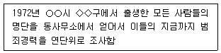
- 패널연구(panel study)
- 추세연구(trend study)
- 예고적 코호트연구(prospectice cohort study)
- 회고적 코호트 연구(retrospective cohort study)
(정답률: 알수없음)
26. 다음 중 보고서 작성시 유의해야 할 사항이 아닌 것은?
- 보고서를 읽는 사람을 고려해 작성해야 한다.
- 개인의 응답내용이 알려지지 않도록 비밀을 보장해 주어야 한다.
- 조사한 내용을 모두 다 제시해야 한다.
- 연구목적에 합당한 중요한 점에 대해서만 집중적으로 다루어야 한다.
(정답률: 알수없음)
27. 교체패널조사(Rotating Panel Survey)와 비교체패널조사(Nonrotating Panel Surver)의 장ㆍ단점에 대한 설명으로 틀린것은?
- 교체패널조사가 비교체패널조사보다 패널을 추적하는 비용을 줄일 수 있다.
- 교체패널조사가 비교체패널조사보다 패널소실(panel attrition)이 적다.
- 비교체패널조사가 교체패널조사보다 모집단의 특성 변화를 파악할 수 있다.
- 비교체패널조사가 교체패널조사보다 개인별 통시적 자료 확보에 유리하다.
(정답률: 알수없음)
28. 다음 중 조사윤리에 대한 설명으로 틀린것은?
- 조사자는 조사결과에 대한 일반인들의 해석에도 관심을 가져야 한다.
- 조사자는 조사의뢰자의 사업정보 및 조사결과에 관한 정보를 비밀로 해야 한다.
- 조사자는 어떤 경우에도 조사대상자의 익명성을 보호해야 한다.
- 조사자는 조사결과를 발표할 때, 조사의뢰자를 밝혀야 한다.
(정답률: 알수없음)
29. 과학적 연구의 특징으로 볼 수 없는 것은?
- 논리적 사고에 의존한다.
- 간결한 것을 추구한다.
- 일반적인 것을 추구한다.
- 연구과정이 동일해도 결론이 다를 수 있다.
(정답률: 알수없음)
30. 다음은 무엇에 관한 설명인가?
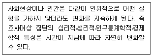
- 선별효과(selection effect)
- 성숙효과(maturation effect)
- 실험효과(testing effect)
- 조사도구효과(instrumentation effect)
(정답률: 알수없음)
2과목: 고급조사방법론 II
31. 표본의 크기를 결정할 때 중요하지 않은 것은?
- 조사목적의 실현 가능성
- 조사비용의 허용 한계
- 표집오차의 허용 범위
- 연구책임자의 리더쉽 한계
(정답률: 알수없음)
32. 특정 측정도구를 사용하여 어떤 사람의 지적 능력을 수차례 조사하였더니 측정결과들이 균일하게 나타났다. 이런 결과는 다음 중 무엇을 가장 잘 가리키는가?
- 조사자의 높은 신뢰도
- 조사자의 높은 타당도
- 측정도구의 높은 신뢰도
- 측정도구의 높은 타당도
(정답률: 알수없음)
33. 실험실(laboratory) 실험설계를 통한 연구의 단점은?
- 외적 타당도를 확보하기 어렵다.
- 인관관계(causation)를 명확히 알 수 있다.
- 기존 이론을 정교화 하는데 연구결과를 이용할 수 있다.
- 연구조건이 명확하여 연구과정을 쉽게 반복할 수 있다.
(정답률: 알수없음)
34. 유사실험설계가 순수실험설계에 대하여 우월성을 가지는 영역은?
- 조사결과의 일반화 정도
- 독립변수의 조작가능성 정도
- 외생변수의 통제 정도
- 조사상황의 가공성(인위성) 정도
(정답률: 알수없음)
35. 전수조사(census)와 표본조사 사이의 관계데 대한 설명으로 틀린 것은?
- 전수조사가 가능해도 비용과 시간을 고려할 때 표본조사가 효율적인 경우가 많다.
- 표본조사는 전수조사의 질을 향상시키는데 사용될 수 있다.
- 도서지방이나 산간지방에 대한 정보는 전수조사보다 표본조사를 통해 얻을 수 있다.
- 일정한 시점에서 신제품 광고에 대한 인지도 조사는 표본조사로 신속하게 실시하는 것이 좋다.
(정답률: 알수없음)
36. 북한의 폐쇄적인 외교정책을 파악하기 위해 정치학자들은 자주 노동신문 사설에 대해 단어별, 문장별, 문단별 또는 전체 사설별 내용분석을 실시하고, 그 결과를 취합하여 전체 정책 흐름을 파악하려고 한다. 이런 내용분석 연구에서 가장 중요한 것은?
- 분석단위의 결정
- 분석대상의 결정
- 분석주체의 결정
- 분석객체의 결정
(정답률: 알수없음)
37. 표집(sampling)에 관한 용어 설명으로 틀린 것은?
- 표집(sampling)의 요소와 자료의 분석단위는 때로는 일치하지 않을 수 있다.
- 모집단이란 표본을 통해 대표하려는 전체를 말한다.
- 연구모집단은 표본이 실제 추출되는 요소들의 집합을 말한다.
- 표집틀은 모집단과 동일한 표현이다.
(정답률: 알수없음)
38. 표본설계과정을 순서대로 올바르게 나열한 것은?
- 모집단의 확정 → 표본프레임의 결정 → 표본추출방법의 결정 → 표본크기의 결정 → 표본추출
- 표본프레임의 결정 → 모집단의 확정 → 표본크기의 결정 → 표본추출방법의 결정 → 표본추출
- 표본프레임의 결정 → 모집단의 확정 → 표본추출방법의 결정 → 표본크기의 결정 → 표본추출
- 모집단의 확정 → 표본크기의 결정 → 표본추출방법의 결정 → 표본프레임의 결정 → 표본추출
(정답률: 알수없음)
39. 내용분석의 장점이 아닌것은?
- 연구대상의 반응성(reactivity) 문제를 해결하는데 도움이 된다.
- 주로 단기적 과정에 국한된 자료를 대상으로 한다.
- 면접설문조사에 비하여 시간과 돈이 적게 든다.
- 설문조사나 현지조사 등에 비해 재조사를 쉽게 할 수 있다.
(정답률: 알수없음)
40. 다음은 무엇에 관한 설명인가?
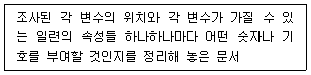
- 설문지(questionnaire)
- 이전용지(transfer sheet)
- 코드용지(code sheet)
- 코드북(code book)
(정답률: 알수없음)
41. 측정과 척도에 관한 설명으로 틀린것은?
- 측정이란 사물이나 사건과 같은 목적물의 속성에 가치를 부여하는 것이다.
- 척도란 측정대상에 부여하는 가치들의 체계이다.
- 측정에 있어서 체계적 오류는 신뢰도와 관련이 있고 무작위 오류는 타당도와 관련이 있다.
- 일반적으로 측정의 형태와 척도의 수준은 같은 의미로 사용된다.
(정답률: 알수없음)
42. 다음 자료 손질 방법으로 틀린것은?
- 변수들이 고정 열 포맷으로 되어 있다면 자유 포맷으로 바꾼다.
- 가능하다면 모든 사례에서 각 변수들이 지정된 포맷대로 배열되어 있는지를 일일이 점검한다.
- 빈도분포를 이용해 변수들의 부호화를 점검한다.
- 변수들에 대한 일관성 점검을 한다.
(정답률: 알수없음)
43. 데이터베이스(database)를 조직화하는 접근방식 중 요소들의 연계(linkage of elements)방식이 다른것은?
- 관계적 접근방식(relational approach)
- 위계적 접근방식(hierarchal approach)
- 연결망 접근방식(network approach)
- 생애 접근방식(life history approach)
(정답률: 알수없음)
44. 자료편집과정에서 발견한 응답되지 않은 설문 문항에 관한 설명으로 틀린것은?
- 응답되지 않은 설문 문항에 해당하는 변수의 갓은 결측값(missing value)으로 처리한다.
- 특정 설문 문항에 응답하지 않은 사례가 많을 경우 해당 문항에 어떤 구조적인 문제가 있는지를 검토해 본다.
- 대부분의 사례에서 응답하지 않은 설문 문항은 분석에서 제외하는 것이 바람직하다.
- 특정 설문 문항에 대해서 어떤 사례들은 응답한 반면 어떤 사례들은 응답하지 않은 경우, 그 설문 문항으로부터는 유용한 정보를 얻는다는 것이 불가능하다.
(정답률: 알수없음)
45. 외국인 근로자가 한국경제에 기여한 바에 대한 학습이 외국인 근로자에 대한 편견을 줄일것이라는 가정하에 이 가설을 과학적으로 검증하기로 하고, 고전적인 실험적 방법을 사용하기로 하였다고 하자. 이 경우 실험 설계에 대한 설명 중 적합하지 않은 것은?
- 외국인 근로자에 대한 편견은 종속변수이고, 학습은 독립변수이다.
- 학습 참여 집단이 실험집단이 되고, 학습 비참여 집단은 통제집단이 된다.
- 원칙적으로 학습 비참여 집단에 대해서도 사전조사와 사후 조사를 실시하여야 한다.
- 실험집단과 통제집단의 구성에 있어서 실험자극의 유무이외애 다른 변인들을 고려해서는 안된다.
(정답률: 알수없음)
46. 다음 중 무선적으로 추출된 표본들의 평균치들의 분포인 표집 분포가 가지는 특징이 아닌 것은?
- 표본이 클 경우 모집단이 정규분포가 아니더라도 표집 분포는 정규분포를 이룬다.
- 표집 분포의 분산은 표본이 추출된 모집단의 분산과 같다.
- 표집 분포의 평균은 표본이 추출된 모집단의 평균과 같다.
- 표본의 크기를 크게 할수록 표집 분포의 변산도(dispersion)는 적어진다.
(정답률: 알수없음)
47. 개별속성들에 할당된 점수를 합산하여 구성하는 지수의 구성항목 설정시 고려할 사항이 아닌 것은?
- 항목들은 지수 대상의 개념과 일치하는 내용이어야 한다.
- 동일개념의 항목은 한 차원의 내용이어야 한다.
- 항목들 간의 서열관계가 명백할수록 좋다.
- 항목들의 측정결과에는 적절한 분산(variance) 또는 분포가 나타나는 것이 좋다.
(정답률: 알수없음)
48. 리커트 척도의 구성에 관한 설명으로 틀린 것은?
- 설문문항은 조사하고자 하는 대상 또는 사회현상과 관련한 여러 진술들로 구성한다.
- 각 문항별 응답범주는 상호 대칭되는 명백한 서열형태의 3점, 4점, 5점척도로 적절하게 설정한다.
- 각 문항설정이 타당하다면, 모든 문항들은 상호간에 높은 상관성이 존재하여야 한다.
- 각 설문문항들 사이에는 서열순위를 설정해야 한다.
(정답률: 알수없음)
49. 다음중 층화표본추출(stratified sampling)방법을 사용하기에 가장 적절한 경우는?
- 모집단에 대한 사전지식이 없을 경우
- 모집단을 구성하는 하부 집단들의 대표성이 요구되지 않을 경우
- 동질적 집단 내에서 무작위 표본추출하고자 핧 경우
- 모집단을 구성하는 하부 집단들간 이질성이 크지 않을 경우
(정답률: 알수없음)
50. 다음 중 척도에 관한 설명으로 틀린 것은?
- 척도는 측정오류를 줄일 수 있다.
- 리커트 척도는 재생계수를 통해 단일 차원성과 누적성을 검증할 수 있다.
- 서스톤 척도는 등간척도로 볼 수 있다.
- 소시오메트리는 집단내의 구성원간의 거리를 측정하는 방법이다.
(정답률: 알수없음)
51. 신뢰도와 타당도의 관계에 관한 설명으로 틀린 것은?
- 신뢰도가 높으면 타당도도 높다.
- 타당도를 측정하는 것이 신뢰도를 측정하는 것보다 어렵다.
- 신뢰도는 경험적 문제이다.
- 타당도는 이론적 문제이다.
(정답률: 알수없음)
52. 다음의 개념이나 측정 중 서열적 자료는?
- 야구 선수의 평균 타율
- TV 프로그램의 시청률 순위
- ㎏으로 표시되는 몸무게
- 인종
(정답률: 알수없음)
53. 다음은 어떤 표본추출방법에 대한 설명인가?
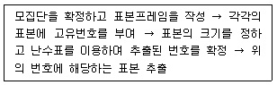
- 단순무작위 표본추출
- 계통표본추출
- 층화표본추출
- 군집표본추출
(정답률: 알수없음)
54. 실험설계의 타당성을 저해하는 외생변수 중 실험대상으로 측정하고자 하는 결과변수의 수준이 매우 낮은 집단을 선정하였을 때 나타나기 쉬운 것은?
- 성숙효과
- 시험효과
- 실험변수의 확산
- 통계적 회귀
(정답률: 알수없음)
55. 다음 중 신뢰도를 측정하는 방법으로 적합하지 않은 것은?
- 반분법(split-half method)
- 복수양식법(multiple forms techniques)
- 외적 일관성 분석(external consistency analysis)
- 내적 일관성 분석 (internal consistency analysis)
(정답률: 알수없음)
56. 비확률표본추출방법이 아닌 것은?
- 편의추출방법(convenience sampling)
- 지역추출방법(area sampling)
- 목적추출방법(purposive sampling)
- 눈덩이 추출방법(snowball sampling)
(정답률: 알수없음)
57. A고등학교의 학생상담실에서 학생명단에서 뽑은 100명을 대상으로 언어사용실태를 조사하였다. 그런데 실제 조사에서는 해당 학생의 담임선생님에 대한 면접을 통해서 조사가 이루어졌다. 이 연구에서 표집단위, 관찰단위, 표집틀은 각각 무엇인가?
- 학생 - 학생 - 학생 명단
- 담임 선생님 - 학생 - 교직원 명단
- 학생 - 담임 선생님 - 학생 명단
- 담임 선생님 - 학생 명단 - 학생
(정답률: 알수없음)
58. 노숙자나 불법체류노동자처럼 특정 모집단에서 구성원들을 찾아내기가 어려울 때 사용하기에 가장 적합한 표본추출방법은?
- 할당표본추출
- 눈덩이표본추출
- 단순무작위표본추출
- 군집표본추출
(정답률: 알수없음)
59. 어떤 모집단에서 단순무작위표집법으로 표본을 50개 추출하였다. 만약 표본의 수를 200개로 늘린다면 어떠한 현상이 발생하는가?
- 모평균의 값이 커진다.
- 표본평균과 최빈값의 차이가 작아진다.
- 추정량의 분산값이 작아진다.
- 모분산의 값이 커진다.
(정답률: 알수없음)
60. 표본추출방법 중 모집단을 일정한 기준에 따라 2개 이상의 동질적인 계층으로 구분하고, 각 계층별로 단순무작위추출방법을 적용하는 것은?
- 계통표본추출
- 층화표본추출
- 집락표본추출
- 단순무작위표본추출
(정답률: 알수없음)
3과목: 고급통계처리및분석
61. A, B 두 맥주에 대하여 시음전문가 6명에게 맛을 보게 한 다음, 맛을 점수로 나타내어 다음의 데이터를 얻었다. 얻어진 점수를 정규분포를 가정할 수 없다고 한다. 두 맥주의 맛에 차이가 있다고 할 수 있는가를 검정하고자 할 때, 가장 적합한 가설검정 방법은?
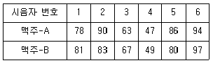
- 독립인 두 모집단의 t-검정
- 윌콕슨 순위합 검정법
- 윌콕슨 부호순위검정법(각 쌍에서의 관측값 차에 적용)
- 앤서리-브레들리 검정(Ansari-Bradley test)
(정답률: 알수없음)
62. 석유회사에서 4종류 휘발유(A, B, C, D)의 연료효율을 분석하기 위해서 4명의 운전자(갑, 을, 병, 정)와 4종류의 자동차(Ⅰ, Ⅱ, Ⅲ, Ⅳ)를 대상으로 실험하고자 한다. 최소 실험횟수를 통해서 연료효율의 차이를 검정하는 통계실험에 대한 설명으로 맞는 것은?
- 라틴 방격법(Latin Square)으로 실험을 배치하여 각 요인들간의 상호작용을 검정할 수 있다.
- 라틴 방격법에 의한 실험은 3가지 요인들에 대한 주효과만을 검정할 수 있다.
- 3가지 요인에 대한 주효과를 분석하는데 64회(4×4×4)의 실험이 필요하다.
- 확률화 블록계획법(Randomized Block Design)에 의한 실험이 경제적이다.
(정답률: 알수없음)
63. 5개 독립변수를 이용하여 투자성 집단 g1과 투기성 집단 g2으로 판별하기 위해서 적합한 로지스틱 판별함수가 아래와 같다고 가정할 때 설명으로 맞는 것은?
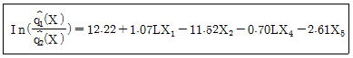
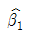
이므로 LX1을 제외한 다른 독립들이 일정한 수준을 유지할 때 사후확률의 승산(odds)은 exp(1.07)=2.92 이다.- 두 집단을 판별하는 데 상대적인 영향력이 큰 독립 변수는 X2이다.
- LX1이 한단위 증가할 때 투기성 집단에 속할 사후 확률보다 투자성 집단에 속할 사후확률이 1.07배이다.
- 판별함수에 포함된 4개 독립변수들의 측정단위가 서로 다를지라도 상대적인 영향력 크기의 비교 분석에는 변함없다.
(정답률: 알수없음)
64. 모비율추정에 필요한 표본의 크기를 구할 때 최대추정오차,
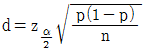
을 n에 대해 정리하면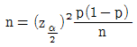
가 된다. 만약, 모비율 p에 대한 사전정보가 없다면 표본의 크기를 구하기 위해 어떤 값을 이용해야 하는가?- p=0.25
- p=0.5
- p=0.75
- p=1
(정답률: 알수없음)
65. 단순회귀모형 y1=α+βx1+ϵi, i=1,...,n에서 회귀계수 추정에 대한 설명으로 틀린것은? (단, 오차항 ϵ의 확률분포를 N(0,σ2)로 가정하고,
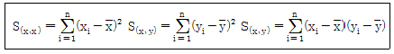
이다.)- β에 대한 최소제곱추정량은
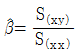
이다. - 최소제곱추정량
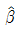
의 확률분포는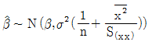
이다. 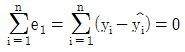
이다.- σ2의 추정량은
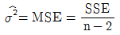
이다. (SSE : 오차제곱합, MES : 오차제곱평균)
(정답률: 알수없음)
66. 인자의 직교회전에 대한 설명으로 틀린 것은?
- 베리맥스 방법은 대표적인 인자의 직교회전방법이다.
- 변수들의 그룹핑을 통해 인자의 해석을 용이하게 하기 위한 방법이다.
- 회전 후 공통성(communality)은 회전 전 공통성과 비교하여 변하지 않는다.
- 회전 후 각 인자의 설명력은 회전 전 각 인자의 설명력과 비교하여 변하지 않는다.
(정답률: 알수없음)
67. 어느 식품에 대한 소비자 선호도 조사에서 5가지 변수내역을 조사하였다. 2개의 요인이 있는 것으로 가정하여 요인 분석을 한 결과가 다음과 같다. 요인 F1과 F2와 관련이 많은 변수는?
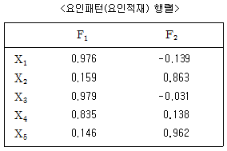
- F1: X2, X4, X5, F2: X1, X3
- F1: X1, X3, F2: X2, X4, X5
- F1: X1, X3, X4, F2: X2, X5
- F1: X2, X5, F2: X1, X3, X4
(정답률: 알수없음)
68. 평균이 1이고, 분산이 1인 정규분포에서 무작위로 얻어진 2개의 자료를 X1과 X2라고 할때 (X1-X2)2의 평균과 분산은 어떻게 되겠는가?
- 평균 = 2, 분산 = 4
- 평균 = 2, 분산 = 8
- 평균 = 4, 분산 = 4
- 평균 = 4, 분산 = 8
(정답률: 알수없음)
69. 취업정보지에서 “은행 신입사원 중 석사학위 소지자의 연봉은 학사학위 소지자의 연봉에 비해 300만원 이상 많다”라고 주장하고 있다. 이 주장을 통계적으로 검정하기 위해 은행 신입사원 중 석사학위 소지자 10명과 학사학위 소지자 11명을 각각 랜덤하게 뽑아 조사하여 다음 결과를 얻었다. 두 모집단이 정규분포에 따르고 분산이 같다고 가정할 때, 이 주장을 검증하기 위한 t-검정 통계값은?
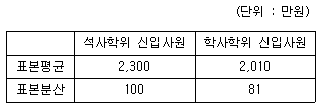
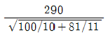
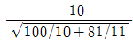
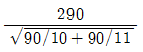
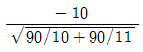
(정답률: 알수없음)
70. 교육수준에 따라 초졸 이하자, 중졸자, 고졸자, 전문대학 졸업자, 4년제 대학 졸업자 등 5개 집단으로 구분하였을 때, 집단들간에 연 평균 소득의 차이가 통계적으로 의미하 있는 가의 여부를 판단하기 위해 사용되는 분석방법은?
- 상관분석
- 분산분석
- 회귀분석
- 군집분석
(정답률: 알수없음)
71. 한강에 유입되는 많은 지천 중에서 6개의 지천을 표본추출하여 수질오염의 상태인 DO(용존산소량)과 BOD(생물 화학적 산소요구량) 조사결과를 이용하여 수질오염이란 종합적 특성을 구하기 위하여 주성분분석(principal component analysis)을 실시하였다. 그 과정에서 다음과 같은 고유벡터(eigenvector)를 구하였다. 이 때, 제1주성분 z1(PRIN1)을 알맞게 표현한 식은?
- z1=-0.297x1+0.954x2
- z1=0.954x1-0.297x2
- z1=-0.297x10.297x2
- z1=0.954x1+0.954x2
(정답률: 알수없음)
72. 이변량 범주형 자료의 두 변수간의 독립성을 검정하기 위하여 사용되는 통계량은?
- t 통계량
- F 통계량
- 카이제곱 통계량
- 윌콕슨 통계량
(정답률: 알수없음)
73. 다음은 A사에서 지난 1997년부터 2003년까지 7년 동안 매월 7월 한달 동안 조사한 삼계탕과 오리탕 값의 자료이다. 스피어만의 순위 상관계수 값은?
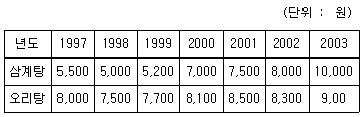
- 0.765
- 0.867
- 0.923
- 0.964
(정답률: 알수없음)
74. 요인분석에서 요인수를 결정하는데 이용되는 기준이 아닌것은?
- 최소고유값 기준
- 스크리 플롯(scree plot) 검정
- 고유치의 누적비율
- F-검정
(정답률: 알수없음)
75. 다음 결과표는 요인분석에서 적당한 요인의 수를 결정하기 위하여 AIC(Akaike Information Criterion)을 이용한 ruddnelk. 자료 해석에 최적인 요인의 수는?
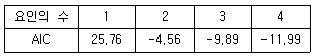
- 1개
- 2개
- 3개
- 4개
(정답률: 알수없음)
76. x에 대한 y의 회귀방정식이 y=5+0.4x라 할 때 x와 y의 표준편차가 각각 3, 2라면 표본상관계수의 값은?
- 0.9
- 0.6
- 0.5
- 0.4
(정답률: 알수없음)
77. 4개 회사에서 판매하는 자동차의 매출액에 차이가 있는지를 알아보기 위하여 회사별로 5개의 대리점을 조사한 결과 총변동의 제곱합이 1560이고, 처리에 듸한 변동의 제곱합이 5220일 때 평균오차제곱합은?
- 50.0
- 55.0
- 60.0
- 65.0
(정답률: 알수없음)
78. 어떤 금융기관에서 신용카드 발급 대상자를 분류하기 위하여 정상집단 π1과 연체집단 π2로부터 각각 30개의 자료를 얻었다. 이 자료로부터 계산되어진 각각의 표본평균벡터와 표본공분산행렬이 다음과 같이 주어져 있을 때 피셔의 일차판별함수를 올바르게 구한 것은?
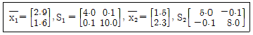
- y=0.311x1-0.078x2
- y=0.412x1-0.108x2
- y=0.523x1-0.231x2
- y=0.142x1-0.349x2
(정답률: 알수없음)
79. 어떤 회사에 근무하는 컴퓨터 전문인들의 급료의 차이를 알아보기 위하여 다중회귀모형 y=β0+β1x1+β2x2+β3x3+ϵ를 사용하였다. 여기서 설명변수 x1은 경력연한, 설명변수 x2는 성별변수로서 남자이면 0, 여자이면 1, 그리고 설명변수 x3는 관리직이면 1, 스텝직이면 0이다. 주어진 자료로부터 추정되어진 회귀직선은
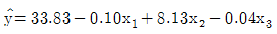
일 때 관리직인 여자의 추정된 회귀직선은?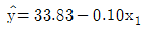
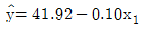
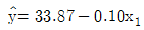
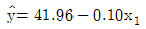
(정답률: 알수없음)
80. 정규모집단의 모평균에 대한 검정에서 모분산을 모르고, 표본의 크기가 충분히 클 때 검정 통계량의 분포는?
- 정규 분포
- F-분포
- 베타분포
- 카이제곱분포
(정답률: 알수없음)
81. 다음중 비모수적 분산분석법은?
- Kruskal-Wallis 검정법
- Glejser 검정법
- Goldfeld-Quandt 검정법
- Carroll-Ruppert 검정법
(정답률: 알수없음)
82. 반복이 있는 이원배치에서 A, B 두 인자의 교호작용의 유무에 대한 가설검정을 교호작용의 평균제곱과 잔차에 대한 제곱평균의 비로 검정하고자 한다. 이 때 이용되는 F 분포의 두 자유도로 맞는 것은? (단, A인자의 수는 p, B인자의 수는 q, 반복수는 r이다.)
- pq, (p-1)(q-1)(r-1)
- pq, pr(r-1)
- (p-1)(q-1), (p-1)(q-1)(r-1)
- (p-1)(q-1), pq(r-1)
(정답률: 알수없음)
83. A, B, C 동에서 표본을 추출하여 D제품의 인식도를 알아보고자 한다. C동은 지리적으로 떨어져 있어 가계조사비용은 A동이나 B동보다 많이 든다. 이런 경우에 층화표본 추출을 설계하는 경우 어떤 배정법에 의해서 표본크기를 결정하는 것이 좋은가?
- 네이만 베정
- 비례배정
- 최적배정
- 할당배정
(정답률: 알수없음)
84. 요인분석(Factor Analysis)에서 사용되고 있는 요인의 개수를 정할 때 사용하는 방법이 아닌 것은?
- 고유값
- 인자의 공헌도
- 카이제곱적합도 검정
- 상관계수검정
(정답률: 알수없음)
85. 구간추정에서 95% 신뢰구간에 대한 설명으로 옳은 것은?
- 추정하고자 하는 모수를 포함할 확률이 대략 0.95이다.
- 추정량과 참값의 차이가 0.95이다.
- 오차의 한계가 0.95이다.
- 추정량과 참값의 차이가 0.⑤이다.
(정답률: 알수없음)
86. 비모수통계학에서의 두 모집단의 상관관계 검정방법은?
- Kruskal-Wallis test
- Mann-Whitney test
- Wilcoxon signed ranks test
- Kendal's tau test
(정답률: 알수없음)
87. 적합된 회귀직선
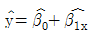
의 통계적 성질에 대한 설명으로 맞는 것은?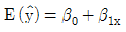
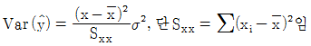
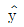
의 분포는 정규분포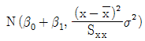
이다.- σ2을 모르는 경우 y의 100(1-α)% 신뢰구간은
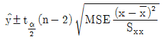
이다.
(정답률: 알수없음)
88. 켄달의 타우(Kendall's tau)를 이용해서 다음 두 집단의 독립성을 검정하려고 한다. 이 자료에서 켄달의 타우검정의 검정통계량은?
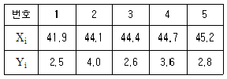
- 1
- 2
- 3
- 4
(정답률: 알수없음)
89. 다음 분산분석표에서 F-검정을 위한 검정통계량의 값은?
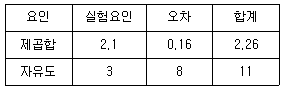
- 35
- 0.7
- 0.02
- 13.125
(정답률: 알수없음)
90. 단순회귀모형 yi=β0+β1xi+ϵi, i=1,2,...,n에서 기울기 β1에 추정치를
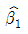
이라 할 때, 기울기 β1의 100(r α)%신뢰구간으로 옳은것은?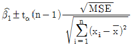
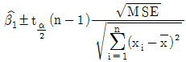
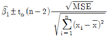
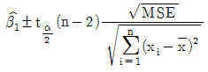
(정답률: 알수없음)
91. 다변량 통계분석방법은 크게 변수의 차원을 줄이는 방법과 관측대상의 차원을 줄이는 방법으로 구분할 수 있다. 다음 중 변수의 차원을 줄이는 방법이 아닌 것은?
- 판별분석
- 주성분분석
- 요인분석
- 정준상관분석
(정답률: 알수없음)
92. 월콕슨 순위합 검정에 대한 설명으로 틀린 것은?
- 비모수적인 검정방법이다.
- 두 모집단에 대한 평균차이에 대한 검정이다.
- 두 모집단의 분포가 동일한지를 검정한다.
- 두 개의 확률표본의 관측치를 혼합하여 크기 순서로 나열하고 순위를 부여한다.
(정답률: 알수없음)
93. X~N(μ, 1)이고, 모평균 μ에 대한 가설 H0:μ=0 대 H1:μ=1의 기각역이 X > 2인 검정법에 대한 설명 중 옳은 것은?
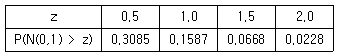
- 제1종의 오류를 범할 확률은 0.6915이다.
- 제2종의 오류를 범할 확률은 0.8413이다.
- 검정력(power)은 0.3085이다.
- X의 관측값이 1이라면 귀무가설을 기각한다.
(정답률: 알수없음)
94. 중회귀분석 yi=α+β1xi1+β2xi2+ϵi에 대한 분산분석표의 일부가 다음과 같다. 이 모형에 대한 결정계수(R2)의 값은?
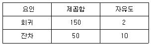
- 0.33
- 0.5
- 0.75
- 3
(정답률: 알수없음)
95. 다음 설명 중 틀린 것은?
- 제2종 오류가 작아지면 검정력이 증가한다.
- 신뢰수준과 유의수준의 합은 1이다.
- 기각역의 범위와 위치는 대립가설의 형태와 유의수준의 크기로 결정된다.
- 유의확률이 유의수준보다 크면 귀무가설을 기각한다.
(정답률: 알수없음)
96. 다음 중 비모수적 방법의 장점이 아닌 것은?
- 최소한의 가정하에서 개발된 통게적 방법이므로 가정이 위배되었을 때 생기는 오류의 가능성이 적다
- 모수적인 방법보다 적용이 용이하고 이해가 쉽다.
- 통계적 의미를 직관적으로 이해하기 쉬우므로 수리 통계학의 깊은 지식이 없어도 접근이 가능하다.
- 데이터가 구간척도나 비율척도 등으로 주어졌을 때 적합한 방법이다.
(정답률: 알수없음)
97. 두 방법 A, B의 차이를 알아보기 위하여 다음과 같은 자료가 얻어졌다. 윌콕슨의 순위합 검정을 시행하기 위한 방법 B의 순위합은?
- 77
- 76
- 75
- 74
(정답률: 알수없음)
98. 모집단으로부터 추출된 크기 100의 랜덤표본에서 구한 표본비율이
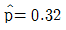
이다. 귀무가설 H0:p=0.3과 대립가설 H1:p > 0.3을 검정하기 위한 검정통계량은?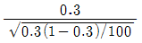
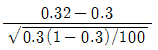
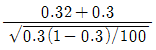
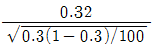
(정답률: 알수없음)
99. 회귀모형에서 오차의 동분산 가정이 위배되는 경우 최소자승법에 의한 회귀계수 추정량의 특징은?
- 최소분산을 갖는 추정량이지만 편의 추정량이다.
- 최소분산을 갖는 불편 추정량이다.
- 최소분산을 갖지 않는 추정량이면서 편의 추정량이다.
- 최소분산을 갖지 않는 추정량이지만 불편 추정량이다.
(정답률: 알수없음)
100. 두변수 X와 Y의 표분편차는 각각 2, 3이고 공분산이 -3인 경우, 두 변수의 상관계수는?
- -0.5
- 0.5
- -√5
- √5
(정답률: 알수없음)